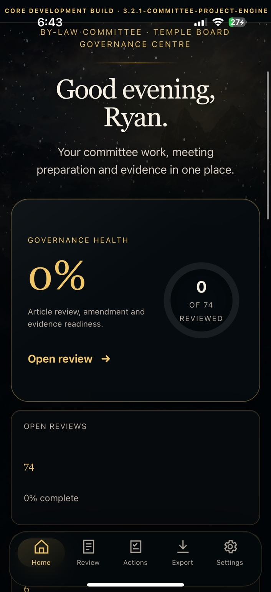

Disconnected reportsUnclear ownershipLost continuity
CORE + ORE by StoneCarta
From paper chaosto organized governance.
One continuous environment for meetings, committees, projects, compliance work, governing documents and institutional continuity.
CORE manages the work. ORE preserves the authority.
Built by Masons, for Masons. Designed for enduring organizations.
Scroll to enter the platform
The operating system for the entire organization
Every responsibility. Every decision. One connected record.
Demonstration environment
Governance Command Centre
Annual review current
0%Governance healthUp to date
0Open reviewsAll current
0Days until reviewNext annual cycle
0Ready reportsMeeting package

PlanPrepareApprovePreserve
A complete governance cycle
Prepare the meeting. Conduct the work. Preserve the outcome.
The platform connects what happens before, during and after every decision.
Before the meeting
Committee reports are requested, readiness is tracked and the draft agenda assembles around completed work.
Property reportFinance reportInsurance renewal
During the meeting
Attendance, motions, decisions, approvals and follow-up responsibilities remain inside one guided workflow.
Motion recordedMoved · Seconded · Carried
After the meeting
Structured draft minutes, assigned actions, supporting evidence and the permanent record are prepared together.
Draft minutes ready
A platform with depth
More than software. A governance system that carries forward.
CORE + OREOne connected system
Built around every role
One platform. A different advantage for every officer.
From meeting preparation to structured draft minutes.
CORE gathers committee reports, carries unfinished business forward, records motions and decisions, creates follow-up tasks and prepares the meeting record for review.
Agenda preparationReport readinessMotions & decisionsDraft minutes
Annual jurisdiction-specific comparison
Compliance findings become completed governance work.
CORE compares the organization’s governing documents against its assigned framework, then turns each identified matter into a traceable resolution workflow.
CORE organizes review work and does not provide legal advice or certify compliance.
Annual comparisonCurrent cycle
1IdentifyIssue linked to authority
2AssignOwner and committee
3ReviewEvidence and counsel
4ResolveApproval and action
5PreserveRecorded permanently in ORE
Review cycle complete · Record preserved
Institutional continuity
The next board inherits context—not just folders.
2026Initial comparisonGovernance baseline
2027Annual reviewResolved amendments
2028Officer transitionContinuity preserved
FutureEvery decisionStill connected
Simple, transparent pricing
A premium governance foundation without enterprise complexity.
$1,500 USD
Governance discovery, workspace configuration, document mapping and the initial jurisdiction-specific comparison.
Discuss Onboarding$35 USD / month
CORE at $25 and ORE at $10, delivered together as one connected governance platform.
Request a DemonstrationSee the entire system in motion
Request a Private DemonstrationMake your first demonstration the moment everything clicks.
No private organizational records are required.